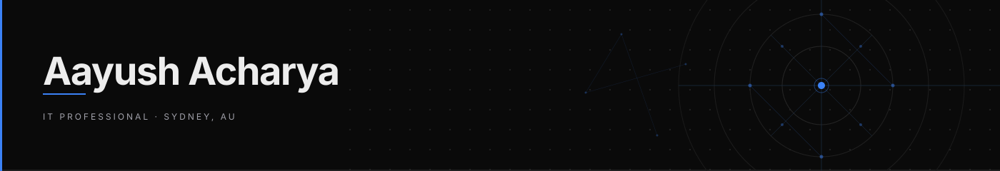

IT Support Professional in Progress · Future Full-Stack Developer & DevOps Engineer
I'm a Computer Science student focused on building a strong foundation in IT Support while working toward a long-term career in full-stack development and DevOps.
I solve practical technical problems, build systems that work in real-world environments, and continuously develop my skills across software, infrastructure, and troubleshooting.
Currently seeking IT Support opportunities where I can contribute, learn fast, and grow into more advanced engineering roles.
My Platforms
```